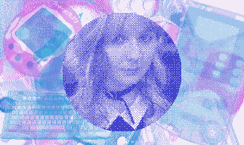
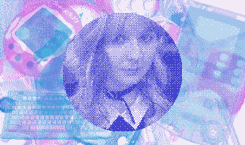

You've got Lillian's link

Lily enjoys playing chess, cartoons, video games, board/tabletop games, shogi, programming, and making art. Lily is a professional software engineer in Minneapolis, Minnesota, but is actually from outer space.

Lily enjoys playing chess, cartoons, video games, board/tabletop games, shogi, programming, and making art. Lily is a professional software engineer in Minneapolis, Minnesota, but is actually from outer space.